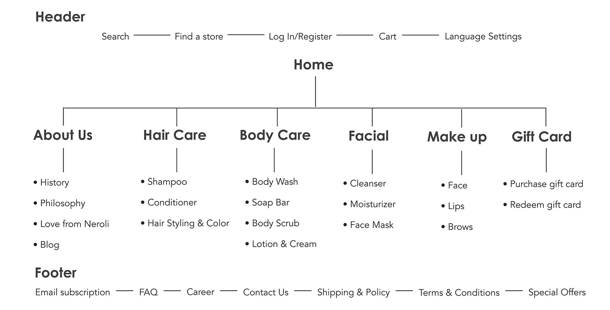
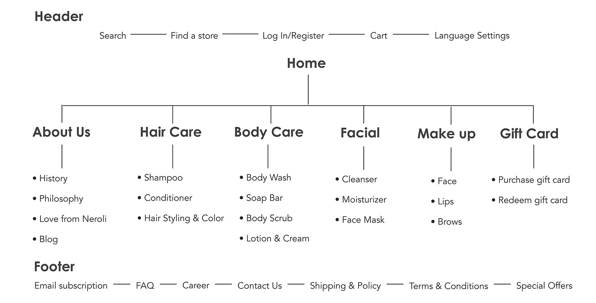
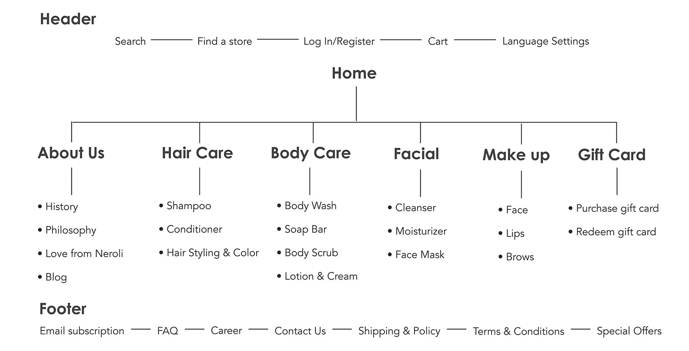

Neroli Cosmetics is a Florida-based startup founded in 2020. The company produces a range of safe and
vegan-friendly skincare and body care products such as body soaps, shampoos, and body lotions. They source
their main ingredients from local, organic citrus farms to ensure that the products meet the highest
standards of quality. The brand’s philosophy is centered on respect - for oneself, others, the environment,
and the community. This value is at the heart of everything they do. As they launch their online store, they
hope to share their philosophy with even more people across the USA.
I was responsible for logo design, packaging design, and designing an aesthetically pleasing and
user-friendly online store that reflected the brand’s philosophy and values. I conducted extensive user
research and testing to ensure that the website provided a smooth and relaxing experience for customers,
with easy navigation and optimized for all devices. The successful launch of the website will be measured by
growing sales volumes through the website, website traffic, media coverage, and positive feedback from
customers.
Category: Logo Design; Packaging Design; UI & UX Design
Tools: Adobe Photoshop, Adobe Illustrator, Figma
